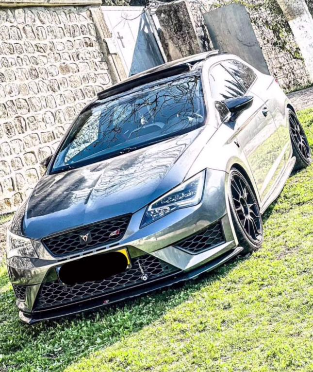

cupra

Created in Barcelona, Inspiring the World Our Vision hails from
Barcelona, we are powered by the city’s vibrant spirit, zest for life
and artistic energy – enriching every CUPRA vehicle with a distinctive
personality and inspiring the world. We strive to stay ahead of the
curve whilst challenging the status quo with our high-performance
vehicles and we succeed in doing so. We are redefining the art of
driving. Our Mission is to create exponential experiences and transcend
traditional automotive boundaries. We create cars that awaken the senses
and evoke emotion – through innovative engineering, progressive design
and electric performance.
Cupra (Cupra) is a new brand in the VAG empire, under whose name SEAT
produces the "charge" of its models. The first model of the new brand
was the small Ateca SUV, the second the independent model Cupra
Formentor.
In 2018, SEAT officially announced the creation of the independent Cupra
brand with its own logo. They announced at the company that this would
allow the car to be given “its own soul, its own DNA and its own
personality.” Now the most powerful and fastest Spanish cars will be
produced under their own names
Cupra is an excellent possibility for the Spanish brand to increase its
popularity, as it will be presented as a “more upscale” model, even
“higher than Volkswagen.” The new brand model will reach new markets,
including North America, and thus sales and profits will increase.